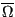
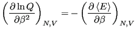

Eq. 2.1 introduced the quantity
 as the number of states available to a system under the constraints of constant number of particles,
as the number of states available to a system under the constraints of constant number of particles,  , volume,
, volume,  , and energy
, and energy  . The fundamental postulate of statistical mechanics, also called the “rational basis”, is the following:
. The fundamental postulate of statistical mechanics, also called the “rational basis”, is the following:
In statistical equilibrium, all states consistent with the constraints
of , , and are equally probable.
or
This relation is often referred to as a statement of the “equal a priori probabilities in state space.” Another way of saying the same thing: The probability distribution for states in the microcanonical ensemble is uniform.
This postulate reflects the fact that we are maximally uncertain with regards to the probabilities of any particular arrangements of degrees of freedom inside a closed system. A closed system is one which cannot exchange energy, volume, or particles with the environment. As such, there is quite literally no way for us to learn anything at all about how particles are arranged, so we must assume all arrangments that satisfy the given energy, volume and number of particles are equiprobable.
One link between statistical mechanics and classical thermodynamics is given by a definition of entropy:
Note two important properties of  . First, it is extensive: if we consider a compound system made of subsystems
. First, it is extensive: if we consider a compound system made of subsystems  and
and  with and as the respective number of states, the total number of states is
, and therefore
. Second, it is consistent with the second law of thermodynamics: putting any constraint on the system lowers its entropy because the constraint lowers the number of accessible states.
with and as the respective number of states, the total number of states is
, and therefore
. Second, it is consistent with the second law of thermodynamics: putting any constraint on the system lowers its entropy because the constraint lowers the number of accessible states.
Temperature is defined using entropy:
, or
Now we will consider constraining our system not with constant , but with constant  . The set of all possible states satisfying constraints of , , and is called the canonical ensemble. We now ask, what is the probability of any microstate in this ensemble? Consider a closed system divided into a small subsystem surrounded by a large “bath” . We imagine that these two subsystems exchange only thermal energy, but no particles, and their volumes remain fixed. We seek to compute the probability of finding the total system in a state such
that subsystem has energy . The entire system is microcanonical, so the total energy, is constant, as is the total number of states available to the system, (we omit the and for simplicity).
. The set of all possible states satisfying constraints of , , and is called the canonical ensemble. We now ask, what is the probability of any microstate in this ensemble? Consider a closed system divided into a small subsystem surrounded by a large “bath” . We imagine that these two subsystems exchange only thermal energy, but no particles, and their volumes remain fixed. We seek to compute the probability of finding the total system in a state such
that subsystem has energy . The entire system is microcanonical, so the total energy, is constant, as is the total number of states available to the system, (we omit the and for simplicity).
When has energy , the total system energy is
, where is the energy of the bath. By constraining system 's energy, we have reduced the number of states available to the whole system to
. So, using the fundamental postulate, the probability of observing the closed system in a state in which subsystem has energy is
We can expand
in a Taylor series around :
|
 |
|
(17) |
| |
|
|
(18) |
where the partial derivative implies we are holding and fixed. We can truncate the Taylor expansion at the first-order term, because higher order terms become less and less important as the size of subsystem becomes larger and larger. What results is the Boltzmann distribution law for energies of a system at constant temperature:
The normalization condition requires that for all energies of subsystem , ,
which defines the canonical partition function, . Therefore,
Because some energies can correspond to more than one microstate, we should distinguish between “states” and “energy levels.” We can express the canonical partition function as
where, as we have seen,
 is the number of microstates with energy . Moving to the continuum limit, and assuming a reference energy of
,
is the number of microstates with energy . Moving to the continuum limit, and assuming a reference energy of
,
where
is the density of states. What is this equation telling us? It is telling us that is the Laplace transform of
. We know that transform pairs are unique, and hence, both and
contain the same information.
We recognize that for a system described by a canonical ensemble, the
energy is a fluctuating quantity. And we now have the probability of
observing a state with a given energy, so we can use
Eq. 1 to compute the average energy,
. Consider
Notice that
Recalling that
, we see that
Now, let us consider the average magnitude of the fluctuations in energy
in the canonical ensemble.
|
|
|
(29) |
| |
|
|
(30) |
| |
|
|
(31) |
| |
|
 |
(32) |
| |
|
 |
(33) |
Now, noting that the definition of heat capacity at constant volume,  ,
is
,
is
we see that
This is an interesting statement. It relates the magnitude of
spontaneous fluctuations in the total energy of a system to that
system's capacity to store or release energy due to changing its
temperature.
The fact (Eq. 28) that the average energy in the
canonical ensemble is related to a derivative of the log of the
partition function implies that is an important thermodynamic
quantity. So, let's go back to our undergraduate thermodynamics
course(s) and recall the following statement of the 1st and 2nd Law:
where is the Helmholtz free energy, defined in terms of
internal energy and entropy as
Now, consider the following derivative of :
|
|
|
(38) |
| |
|
|
(39) |
Therefore,
Considering Eq. 28, we see that
which does indeed suggest an important link between and the
important thermodynamic quantity, the Helmholtz free energy. But what
is the constant  ? To evaluate it, consider the “boundary condition”
as
:
? To evaluate it, consider the “boundary condition”
as
:
Here, we have assumed that the degeneracy of the ground state,
is 1. This tells us that
Using this fact, and combining Eqs. 37 and 41, as
, we see that
Hence, = 0. So,
 |
(45) |
The quantity
is the Helmholtz free energy, .
cfa22@drexel.edu